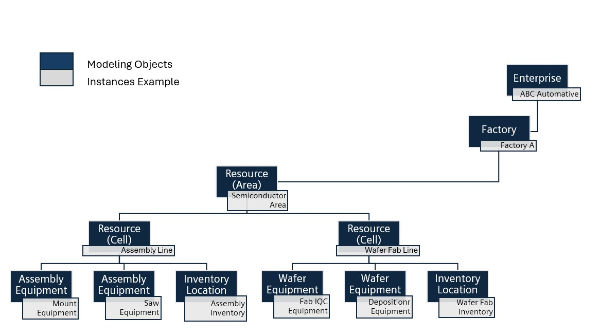

Konfigurieren einer Fabrikhierarchie
Eine "Fabrikhierarchie"-Seite hilft dabei, physische Fertigungsobjekte als eine Pyramide miteinander verbundener Instanzen zu modellieren. Es gibt kein eigenes Modellierungsobjekt für die Fabrikhierarchie. Stattdessen wird die Hierarchie durch Konfigurieren von Eltern-Kind-Beziehungen definiert. Die folgenden Objektinstanzen werden von Semiconductor Factory Hierarchy unterstützt:
| • | Unternehmen |
| • | Fabrik |
| • | Lagerort (verfügbar, wenn Industrielösungen installiert ist) |
| • | Ressource (Zelle) |
| • | Ausrüstungen (umfasst Semiconductor-Ausrüstung wie Montageausrüstung, Backgrind-Ausrüstung, Testausrüstung, Waferausrüstung und Wafersortierausrüstung) |
| Wichtig: | Das Modellierungsobjekt "Ressource" enthält ein Feld "Fabriklevel". In diesem Feld können Sie eine Ressource als Fabrikbereich oder Unterbereich und nicht als Ausrüstung konfigurieren. |
Dieses Thema veranschaulicht Beispiele für Fabrikhierarchiekonfigurationen. Das fiktive Unternehmen ABC Automotive betreibt zum Beispiel eine Anlage namens "Factory A". Innerhalb dieser Fabrik gibt es einen Semiconductor-Fertigungsbereich, der zwei Produktionslinien umfasst, die jeweils mit spezifischen Ressourcen ausgestattet sind und über einen eigenen dedizierten Lagerort verfügen.
Dieses Diagramm stellt die Modellierung der Beispielkonfiguration grafisch dar.

Schritte zum Modellieren des Beispiels
Dies sind die Schritte zum Konfigurieren der oben dargestellten Beispielhierarchie:
| 1. | Definieren Sie ein Unternehmen, z. B. "ABC Automotive". |
| 2. | Definieren Sie eine Fabrik und legen Sie das "Unternehmen" auf "ABC Automotive" fest. |
| 3. | Definieren Sie eine Ressource mit dem Namen "Semiconductor Area" mit "Bereich" als Fabriklevel. Legen Sie die Fabrik auf "Factory A" fest. |
| 4. | Definieren Sie eine Ressource mit dem Namen "Assembly Line" mit "Cell" als Fabriklevel. Legen Sie die übergeordnete Ressource auf "Semiconductor Area" fest. |
| 5. | Definieren Sie eine Ressource mit dem Namen "Wafer Fab Line" mit "Cell" als Fabriklevel. Legen Sie die übergeordnete Ressource auf "Semiconductor Area" fest. |
| 6. | Definieren Sie Ressourcen vom Typ Mount Equipment mit "Equipment" als Fabriklevel. Legen Sie die übergeordnete Ressource auf "Assembly Line" fest. |
| 7. | Definieren Sie Ressourcen vom Typ Fab IQC-Equipment mit "Equipment" als Fabriklevel. Legen Sie die übergeordnete Ressource auf "Wafer Fab Line" fest. |
| 8. | Definieren Sie einen Lagerort mit dem Namen "Assembly Inventory". Legen Sie die übergeordnete Ressource auf "Assembly Line" fest. |
| Hinweis: | Bei diesem Schritt wird davon ausgegangen, dass Industrielösungen installiert ist. |
| 9. | Definieren Sie einen Lagerort mit dem Namen "Wafer Fab Inventory". Legen Sie die übergeordnete Ressource auf "Wafer Fab Line" fest. |
| Hinweis: | Bei diesem Schritt wird davon ausgegangen, dass Industrielösungen installiert ist. |
Die Ergebnisse dieser Konfiguration werden sichtbar, wenn Sie das Unternehmen in der Fabrikhierarchie-Baumstruktur auf der Seite "Fabrikhierarchie" auswählen.
Das Seitenlayout "Fabrikhierarchie" enthält ein Fenster auf der linken Seite, in dem die Fabrikhierarchie als Baumstruktur angezeigt wird. Die Auswahl in der Baumstruktur bestimmt die Modellierungsseite, die auf der rechten Seite des Fensters angezeigt wird.
Symbole der Fabrikhierarchie-Baumstruktur

Baumstruktur erweitern und reduzieren
Zunächst ist die Baumstruktur auf dem obersten Level (Unternehmen) reduziert. Wenn Sie auf einen nach rechts zeigenden Pfeil vor einem Element klicken, wird die Baumstruktur erweitert, um die unmittelbaren unteren Elemente des Elements zu zeigen. Klicken Sie auf einen nach unten zeigenden Pfeil vor einem Element, um das Element zu reduzieren. Das Symbol mit den gegenüberliegenden diagonalen Pfeilen ermöglicht es Ihnen, alle l-Levels der Baumstruktur zu erweitern oder die Baumstruktur auf Unternehmenslevel zu reduzieren.
Durchsuchen der Baumstruktur
Sie können die Baumstruktur durchsuchen, indem Sie Text in das Suchfeld eingeben und die Eingabetaste drücken oder auf das Suchsymbol klicken.
Bearbeiten von Baumstrukturelementen
Wenn Sie auf den Namen eines Elements in der Baumstruktur klicken, wird das Element im Bereich der Modellierungsseite rechts neben der Baumstruktur geöffnet. Änderungen, die im Modellierungsbereich vorgenommen werden, spiegeln sich sofort in der Baumstruktur wider. Wenn Sie beispielsweise einem Element ein untergeordnetes Element hinzufügen, wird es im Menü unter seinem übergeordneten Element angezeigt.
Hinzufügen eines neuen Elements
Das Symbol für das Hinzufügen eines neuen Elements wird ganz links in der Suchleiste angezeigt. Sie haben die Möglichkeit, zwei Dinge zu tun:
| • | Fügen Sie eine Modellierungsinstanz mit gleichen Fabriklevel und dem gleichen übergeordneten Element wie ein vorhandenes Element in der Baumstruktur hinzu. |
| • | Fügen Sie ein untergeordnetes Elements zu einem vorhandenen Element in der Baumstruktur hinzu. |
Ein Kontextmenü der Fabrikhierarchielevels wird angezeigt, nachdem ein Element ausgewählt und auf das Symbol für das Kopierlevel geklickt wurde. Levels, die im Kontextmenü aufgelistet werden, umfassen das Level des ausgewählten Elements selbst sowie das untergeordnete Level, sofern vorhanden. Wenn ein Level im Kontextmenü ausgewählt wird, lädt die Anwendung eine leere Instanz in den Modellierungsbereich mit dem entsprechenden Fabriklevel und dem übergeordneten Element.
Hinzufügen eines vorhandenen Elements
Das Symbol  für das Hinzufügen eines vorhandenen Elements ermöglicht eine erhöhte Funktionalität:
für das Hinzufügen eines vorhandenen Elements ermöglicht eine erhöhte Funktionalität:
Die Fabrikhierarchie-Baumstruktur wurde erweitert, sodass vorhandene Fabriken ohne übergeordnetes Unternehmen hinzugefügt werden können. Darüber hinaus können Ressourcen, die nicht Teil des Fabrikhierarchiemodells sind, der Fabrikhierarchie als "Bereich", "Zelle" oder "Ausrüstung" hinzugefügt werden. Wenn Sie eine Ressource auswählen, werden automatisch die Fabrik-/Eltern-Ressource und das Fabriklevel festgelegt. Wenn Sie Industry Solutions installiert haben, können Sie der Baumstruktur auch vorhandene Lagerorte hinzufügen. Weitere Informationen zum Definieren und Zuweisen von Lagerorten finden Sie im Opcenter Execution Core Industry Solutions-Benutzerhandbuch.
Die Fabrikhierarchie kann jetzt mit zusätzlicher Semiconductor-Ausrüstung verknüpft werden wie:
| • | Zusammenbauausrüstung |
| • | Backgrind-Ausrüstung |
| • | Testausrüstung |
| • | Waferausrüstung |
| • | Wafersortierung: Ausrüstung |